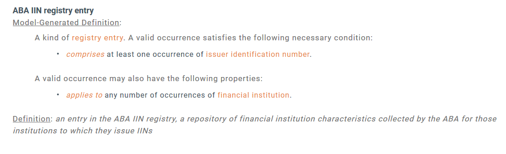

EDM Council FIBO Glossary
Generated from the OWL, the FIBO glossary is a list of classes and properties defined in FIBO, including their logical definition, curated natural language definition and synonyms where available. As with all of FIBO, there is a Production version of the Glossary, which includes definitions of terms that have been vetted by the FIBO content teams, as well as a Development version, which includes terms that are currently being developed.
There are four ways to work with the FIBO Glossary.- Web Searchable
- Downloadable as a .csv for working in a spreadsheet
- Downloadable as a .xlsx for working in a spreadsheet
- Downloadable as RDF annotations for use with FIBO itself
Web Searchable
A user-friendly web page that includes label, curated definition, synonyms (where available) and model-generated definitions for all classes and properties in FIBO.Example:
Comma Separated Values format
A comma-separated file with the same information as the web page; label, curated defintion, synonyms and model-generated defintion. For use in spreadsheets, including Excel.Excel format
A file that can be read with Microsoft Excel, containing label, curated definition, synonyms, model-generated definition, examples and explanatory notes (when available). Exclusively for use with Excel, this file includes formatting to make the spreadsheet easier to read.Example:

Downloadable RDF Annotations
For application developer who want to be able to query for the human-readable versions of the FIBO logic, that is avaiable in ttl and RDF/XML formats. Release Notes:- 2018 Q3
- Publication of human-readable logic in RDF
- 2018 Q1
- Improved spreadsheet generation
- Added fields to the tabular glossary
- 2017 Q4
- Overhaul of the glossary generation system to keep glossaries in sync with all versions of FIBO
- Updated the Excel format to freeze the title row
- Improved natural language rendition of model-driven definitions
- 2017 Q3
- Initial release